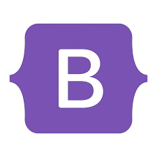
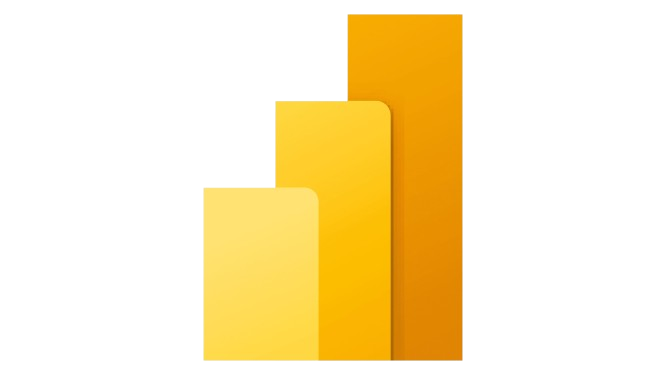

Linguagens & Ferramentas
 Tailwind
Tailwind

Bootstrap

Power BI
Supabase
Criando soluções digitais modernas, eficientes e inteligentes.
Transformando ideias em experiências tecnológicas reais.
Meu nome é Gabriel Gazeta Marcelino, nasci em 11/12/2007 e tenho anos. Sou estudante de Engenharia de Software na UNAERP — Ribeirão Preto - SP. Apaixonado por tecnologia e inovação, busco criar soluções escaláveis, funcionais e com design moderno.
Iniciei em programação em 2022, explorando HTML, CSS e JavaScript.
Fiz cursos de programação pelo SENAI sendo eles AZ-900, AI-900 aprendendo o Básico de programação.
Comecei o curso técnico do SENAI em Análise e Desenvolvimento de Sistemas — 2024–2025.
Desenvolvendo lógica de programação e projetos reais.
Clique aqui para
ir.
Terminando o Ensino Médio na escola SESI-227 — 2025
Cursando Engenharia de Software, focando em Full Stack e arquitetura de sistemas — 2025 - 202#.
Aprendendo Python e aprofundando conhecimentos.
Desenvolvimento de portfólio interativo, APIs em JS e projetos internos do SENAI. Experimentando sempre novas tecnologias.
Tailwind
Site pessoal moderno construído com HTML, CSS, JavaScript e Tailwind, contendo animações, partículas e temas dinâmicos.
Ver no GitHub →Sistema completo de login e registro com animações e validação de dados utilizando HTML, CSS, Tailwind e JavaScript.
Ver no GitHub →Blog criado para compartilhar conhecimentos sobre Inteligência Artificial, com layout limpo e responsivo.
Ver no GitHub →Site fictício criado para a venda de um produto imaginário, idealizado pelos educadores Marcelo Bruno Fuentes e Josiane Matiolli, com foco em design e criatividade.
Ver no GitHub →Projeto escolar orientado por Luciana Pignatta, apresentando a cultura e história dos povos originários do Brasil, com foco educativo e visual envolvente.
Ver no GitHub →Aplicação prática desenvolvida para facilitar o cálculo de horas trabalhadas por freelancers da família, automatizando somas e reduzindo erros em pagamentos.
Ver no GitHub →Quer conversar ou colaborar? Me chame: